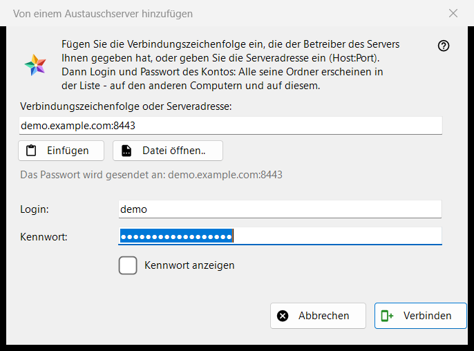
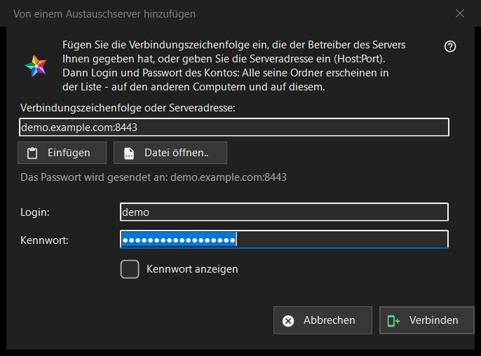

Von einem Austauschserver hinzufügen
Verwendungszweck
Verbindet diesen Computer mit einem Konto auf einem Austauschserver, sodass die Ordner aller Geräte dieses Kontos in der Ressourcenliste erscheinen. Das Fenster öffnet sich über die Schaltfläche «Von einem Austauschserver hinzufügen..» im Abschnitt «Meine Geräte» der Ressourcenliste sowie dann, wenn Sie eine Verbindungszeichenfolge oder -datei auf das Programm ziehen oder im Ordnerfeld eingeben.


In dieser Reihenfolge
- Fügen Sie die Verbindungszeichenfolge des Server-Betreibers ein, geben Sie die Adresse als host:port ein oder drücken Sie «Datei öffnen..».
- Prüfen Sie die Zeile «Das Passwort wird gesendet an: ..»: Diese Adresse ist der einzige Ort, an den das Passwort geht.
- Geben Sie Login und Passwort ein.
- Drücken Sie «Verbinden».
- Fragt das Programm nach dem Zertifikat des Servers, vergleichen Sie den Fingerabdruck mit dem, den der Betreiber genannt hat.
Die Elemente
Verbindungszeichenfolge oder Adresse
Das erste Feld nimmt eine Verbindungszeichenfolge (sie beginnt mit FMSEXCH1:) oder eine Adresse als host:port. «Einfügen» füllt es aus der Zwischenablage, aus Text oder aus einem Bild eines QR-Codes, und «Datei öffnen..» liest eine .fmsexch-Datei oder ein QR-Bild. Das Einfügen füllt nur das Formular: Gesendet wird nichts, bis Sie «Verbinden» drücken. Die Zeile unter dem Feld zeigt, wohin das Passwort geht; eine Webadresse, ein Ordnercode oder eine beschädigte Zeichenfolge wird dort in klaren Worten abgelehnt.
Login und Passwort
«Login:» wird aus der Zeichenfolge gefüllt, wenn sie einen enthält. «Kennwort:» ist verdeckt; «Kennwort anzeigen» macht es sichtbar. Beim Drücken von «Verbinden» werden die Passwortfelder geleert, bevor das erste Byte den Computer verlässt. Die Statuszeile zeigt den Fortschritt und bei einem Fehlschlag den Grund: ein Login oder Passwort, das nicht passte, zu viele Versuche, ein Server, der nicht antwortet.
Eine Einladungszeichenfolge
Eine Zeichenfolge, die eine Einladung ist, nennt den Server bereits und schaltet das Fenster auf das Anlegen eines Kontos um: «Passwort noch einmal:» und ein Hinweis zur Passwortregel erscheinen (mindestens 10 Zeichen, mit einem lateinischen Großbuchstaben, einem lateinischen Kleinbuchstaben und einer Ziffer), und die Schaltfläche heißt «Konto erstellen». Das letzte Wort zur Regel hat der Server.
Das Zertifikat des Servers
Ist das Zertifikat unbekannt, zeigt eine Frage seinen Fingerabdruck und fragt, ob dem Server vertraut und er gemerkt werden soll; die Standardantwort ist Nein. Nennt die Zeichenfolge einen Fingerabdruck und der Server legt einen anderen vor, werden beide gezeigt, nichts wird gemerkt und kein Passwort gesendet.
Erneut anmelden
Ist das Fenster für einen vorhandenen Servereintrag zum erneuten Anmelden geöffnet, zeigt es Adresse und Login schreibgeschützt, und der Fingerabdruck, den dieser Eintrag gemerkt hat, ist der Vertrauensanker.